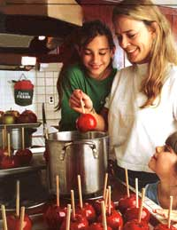
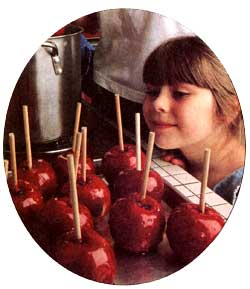
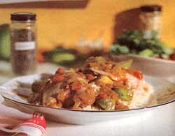
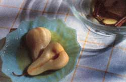

A battle between the sweet and the tart.
Fall is full of contrasts. Balmy summer evenings make way for crisp, grab-a-jacket weather. The sweet softness of the peaches, plums, and berries is replaced with the noisy crunching of the first fall apple. As sorry as we are to see summer end, at least it departs in a blaze of glory with bright autumn leaves and crisp, tart fruit. Sure, my dentist advised me to cut up my fall fruit to avoid damaging a capped tooth, but I ignore him because cut fruit isn't the same. There's something about wiping an apple on your flannel shirt on the way home from the apple orchard and eating it whole. Besides whole fruit munching, there are other ways to consume those apples, pears, and cranberries without getting stuck in a dessert rut and it's to our advantage to do so. A recent Harvard study of 30,000 men found that those who ate the most fruit fiber, the equivalent of five apples a day, were less than half as likely to develop high blood pressure. Pectin, the fiber in apples and pears, is known to reduce cholesterol and heart disease and possibly prevent cancer. So an apple a day (or two, three, or four) really isn't a bad idea.
APPLES We like to make apple juice in our juicer or make applesauce out of the reject apples. Apple juice and sauce freeze well, so they can be kept all winter. Apples must be kept cold (about 45°) to stay fresh. Try to buy from a local stand or orchard since supermarket apples tend to be waxed. While the waxes themselves are considered safe (but who wants to eat a candle?), they seal in pesticide residues because waxes don't wash off of the fruit. Local orchards also carry varieties other than the old standbys. Sample a few and discover a new favorite. (My latest favorite is a Pippin.)
*Candied Apples
5 apples
2 cups sugar
1 cup light corn syrup
1 cup water
1 two-inch stick of cinnamon
red food coloring
Stir all ingredients until sugar is dissolved. Bring to a boil. Cover and cook three minutes (steam will wash down crystal). Uncover and cook without stirring nearly to hard crack-290°F on a candy thermometer. Remove cinnamon stick; add a few drops of red food coloring. Pour glaze into a double boiler above (not in) boiling water while dipping apples. Skewer apples. Dip quickly. Dry, upside down, on a piece of foil.
Chicken-Apple Curry
We all used to love this dish every time my French stepmother made it back in the sixties. It's still a delicious dinner and has no need for a vegetable or fruit salad because it's all-inclusive. I've altered the fat and seasonings for the nineties.
3 cups uncooked long-grain brown or white rice (1 use basmati.)
3-3 1/4 pounds chicken thighs (8-10 thighs)
1 teaspoon olive oil
4 large cloves garlic, minced
1/4 teaspoon seeded, minced jalapeno pepper (wear rubber gloves)
1 tablespoon ginger root, peeled and minced
1 large onion, chopped
4 teaspoons good-quality curry powder (Be sure it's fresh.)
2 teaspoons ground cardamom
1/4 teaspoon freshly ground pepper
1 1/4 cups unsalted chicken broth
3 large canned plum tomatoes, chopped
1 tablespoon canned tomato puree
1 large Granny Smith (or other green) apple, cut into 3/4-inch cubes
Boil six cups of water in a large pot. Add rice, cover, and reduce to simmer. Cook 40 to 45 minutes until the water has evaporated. Let sit covered until serving. Wash, skin, and dry off the chicken. Heat a large nonstick skillet on medium-high heat. Add the oil, then the chicken. Cook for about five minutes per side until the chicken is browned, reducing the heat if it starts to burn. Push the chicken to the side of the pan and add the garlic, hot pepper, ginger, and onion. Sauce for a minute or so before adding the spices. Stir the spices into the onion mixture for about a minute. When the spices are fragrant, stir in the broth, tomatoes, and puree. Simmer on medium heat uncovered for 20 minutes. While it's cooking, chop the toppings and place them into small serving bowls. Add the apples and simmer another 10 minutes, just until the apples are cooked. Check to see if the center of the chicken is done. Serve over rice, spooning on the sauce. Pass the bowls containing the toppings.
Possible toppings:
6 green onions, finely chopped
1 green, red, or poblano pepper, finely chopped
1/2 seedless cucumber, cut into small cubes
1 apple, cut into small cubes
chopped cilantro or parsley
for the daring: hot peppers, seeded and minced
Apple-Sweet Potato Bake
Use as a side dish for meat or the Thanksgiving turkey. Make sure to use apples and sweet potatoes with similar diameters so the slices will be about the same size.
3 medium sweet potatoes
3 small cooking apples
1/3 cup organic unfiltered apple cider
1 tablespoon salted butter
2 tablespoons maple syrup
1/4 teaspoon cinnamon
1/4 teaspoon nutmeg
1/4 teaspoon ground ginger
Have ready a shallow casserole or quiche pan. Preheat the oven to 350°F. In a glass measuring cup, melt the butter and maple syrup just until melted, then set aside. Slice the sweet potatoes into 1/8- to 1/4-inch circles. Slice the apples across the core into same-sized circles. (There will be holes in the centers.) Alternate the sweet potatoes and the apple slices in the casserole domino style. Whisk the apple cider and spices into the butter mixture. Pour immediately over the slices. Cover with a lid or foil and bake for 30 minutes. (If you're preparing this dish ahead of time you can stop at this point, cool, and refrigerate.) Remove the foil and bake for about another 30 minutes, just until the slices are tender.
PEARS Eating pears for dessert could prevent a person from developing a pear-shaped body. (My theory.) I rarely peel the skins since they're a good source of fiber and vitamin C. It seems that folks tend not to bother with pears because they've found that one day the pears are rock hard and two days later they're rotten to the core-definitely a plan-ahead fruit. I never used to like pears because I thought they were supposed to be mushy, a texture I despise. Now I check those fall pears daily until they've just begun to soften and either consume or refrigerate. The ripening process can be accelerated on the kitchen counter by keeping them in a paper bag or plastic bag punched with a few holes. Don't store them bagged in the refrigerator or they'll turn brown. How soft is soft? A crisp Bosc or a firm Anjou will never be as soft and fragrant as a Bartlett pear. Pears should be slightly softened on the stem end, and they bruise easily so handle with care.
Poached Pears Poached pears can accompany dinner or can be saved for a nonfat dessert, served warm and topped with vanilla frozen yogurt. Use a decent wine for the best flavor and firm pears such as Boscs. (Bartletts will fall apart.)
1 cup white wine
1/2 cup apple cider (I prefer the unfiltered organic variety.)
2 tablespoons sugar
1 tablespoon real maple syrup
2 cinnamon sticks
6 whole allspice berries
4 thin circles of fresh ginger root
4 firm, ripe pears, halved, seeded, peeled
In a 10-inch skillet, pour in all the ingredients except the pears. Simmer just until hot, then add the pears, cut-side down. Cover and tilt the lid slightly. Simmer for 10 minutes, turn the pears over, and simmer for another 10 minutes. The size and variety will cause the cooking time to vary, so keep checking. The pears should be tender but not mushy like canned pears. Remove the pears from the skillet with a slotted spoon and slowly boil the sauce for about 10 more minutes until it is reduced. Pick out the cinnamon sticks, allspice, and ginger. Spoon some sauce over each pear half and serve.
CRANBERRIES
It's a pity that the tartest of the fall fruits are usually found in a cranberry sauce that's loaded with sugar when there are so many other options. I've found that cranberries keep better in the freezer, and I use them all winter for muffins, breads, and desserts, in the morning's granola, and, of course, in turkey stuffing.
Harvest Crumble
5 medium apples, seeded and quartered
2 firm pears, seeded and quartered
1 cup fresh or frozen (not thawed) cranberries
2 tablespoons Amaretto (or 1 teaspoon almond extract)
1/4 cup apple cider (I use unfiltered organic)
2 tablespoons honey Topping: 3 tablespoons hard butter, cut into 1/2-inch cubes
1/3 cup brown sugar
1/2 cup sifted whole wheat pastry flour or unbleached white flour
1 1/2 teaspoons cinnamon
Preheat oven to 375°F Using a food processor or by hand, slice the apples and pears into 1/4-inch slices. Place in a large bowl with the cranberries. In a glass measuring cup or saucepan, heat the Amaretto, cider, and honey in the microwave or on the stove just until honey dissolves. Toss with the fruit and pour into a 7 1/2-x-11-inch glass baking pan. In a food processor or using a pastry blender, pulse the topping ingredients into tiny balls. Spoon on top of the fruit and press down with a flat spatula. Bake for about 30 minutes, then press down the topping again. Bake for about another 10 minutes, just until the fruit is soft and the topping is crispy. Cool for at least 15 minutes. Top with lowfat vanilla ice cream. *Candied apples from Kitchen Magic http./www.msmagic.com/-msmagic/
|
 Robin Thomas The Cahills strike again. We couldn't resist grabbing some photos of the apple authorities in action. Here, Grinny Cahill cooks up some candy apples with neighbor's grandkids Melissa (left) and Katelyn Foley. |
 |
|
|
 |
 |
|